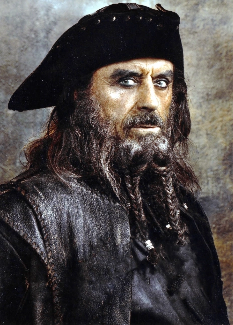

Barbanegra
Edward Teach o Edward Thatch (¿Brístol?, c. 1680-Ocracoke, Carolina del Norte, 22 de noviembre de 1718), más conocido como Barbanegra (en inglés, Blackbeard), fue un pirata inglés que operó alrededor de las Indias Occidentales y la costa este de las colonias británicas de Norteamérica a principios del siglo XVIII. Poco se conoce sobre sus primeros años, aunque se cree fue un marinero de los barcos corsarios participantes de la guerra de la Reina Ana, que tras la misma se establecería en la isla bahameña de Nueva Providencia, base de operaciones del capitán Benjamin Hornigold, pirata bajo el cual Teach iniciaría sus actividades delictivas alrededor de 1716. Hornigold lo pondría al comando de un sloop que este había capturado. Tras esto, ambos se verían involucrados en numerosos actos de piratería. Su éxito pronto se vería impulsado por la adición de dos barcos a la flota, uno capitaneado por Stede Bonnet; a pesar de esto, Hornigold se retiraría de la piratería a finales de 1717, llevándose dos navíos con él. Su más sonado ataque fue realizado en la localidad de Charleston, Carolina del Sur, en mayo de 1718. Fue aliado del por aquel entonces gobernador de Carolina del Norte, Charles Eden, quien llegó a perdonar sus actividades ilegales a cambio de obtener un provecho de los saqueos realizados por el pirata. Barbanegra, que ostentaba un peculiar atuendo a la hora de hacer sus ataques, se convirtió en una figura muy popular en diversas manifestaciones culturales.